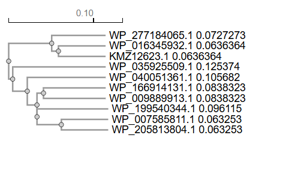
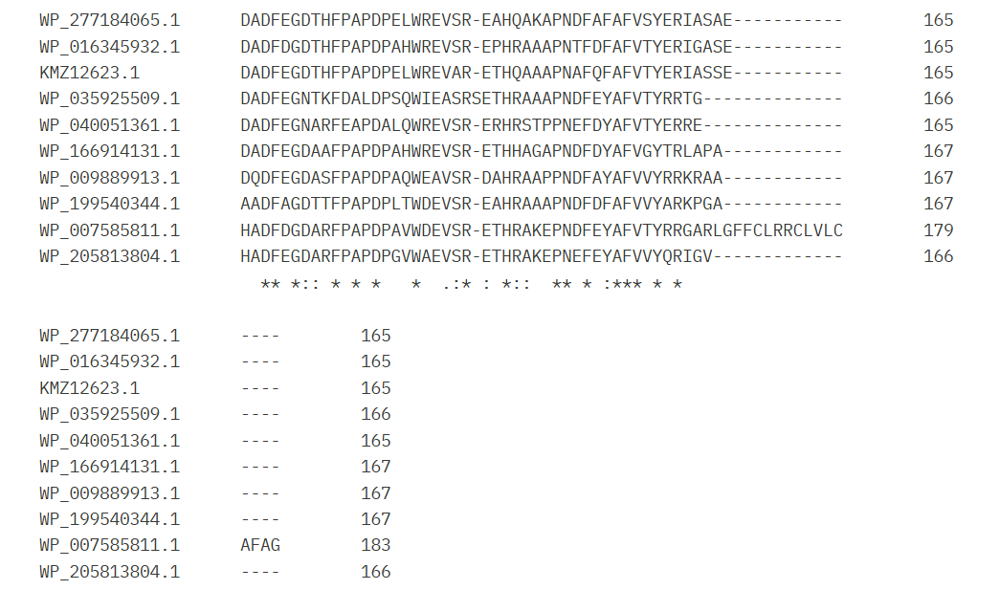

Experiment 4
Multiple Sequence Alignment and Phylogenetic Analysis: CLUSTAL W / Phylogeny
Aim & Objectives
Aim
To perform multiple sequence alignment and construct phylogenetic trees using CLUSTAL W.
Objectives
- To align three or more sequence to find out structural and functional relationship between the sequences.
- To study the nature of conserve domain information of query sequence with other homologous sequence in MSA profile.
- To study phylogenetic relationship between organism.
Principle
Multiple sequence alignment arranges three or more sequences to identify conserved residues across species. CLUSTAL W uses progressive alignment algorithms with scoring matrices. Phylogenetic analysis uses aligned sequences to infer evolutionary relationships based on genetic similarity and divergence.
Output
Result

